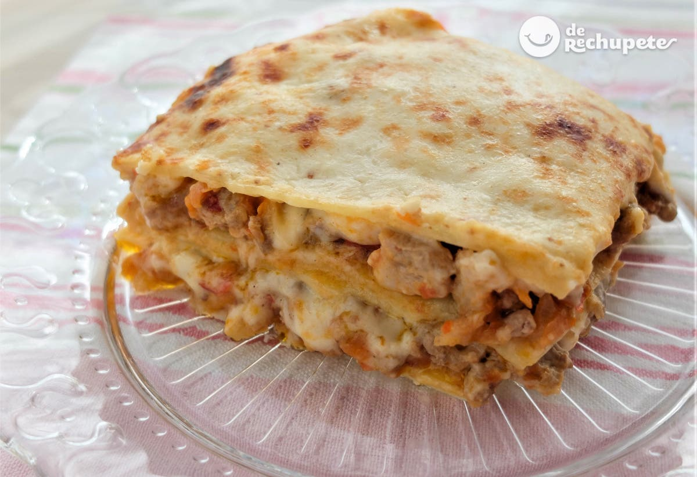

LASANGE

Descripcion
Rico plato tradiconal italianoa que le gusta al ivan
su preparacion es tediosa pero sabe rica
si nunca la has probado pues hazla y pruebala ahi te van los ingredientes
Los ingredientes son:
- Pasta
- Carne molida
- Tomate
- Ajo
Los paso a seguir son:
- Cocer la pasta
- Cocer aparte el tomate la carne y el ajo
- Mezclar bien la carne el tomate y el ajo
- Una vez cocida la pasta poner en un refactario una capa de pasta seguido de una capa de carne